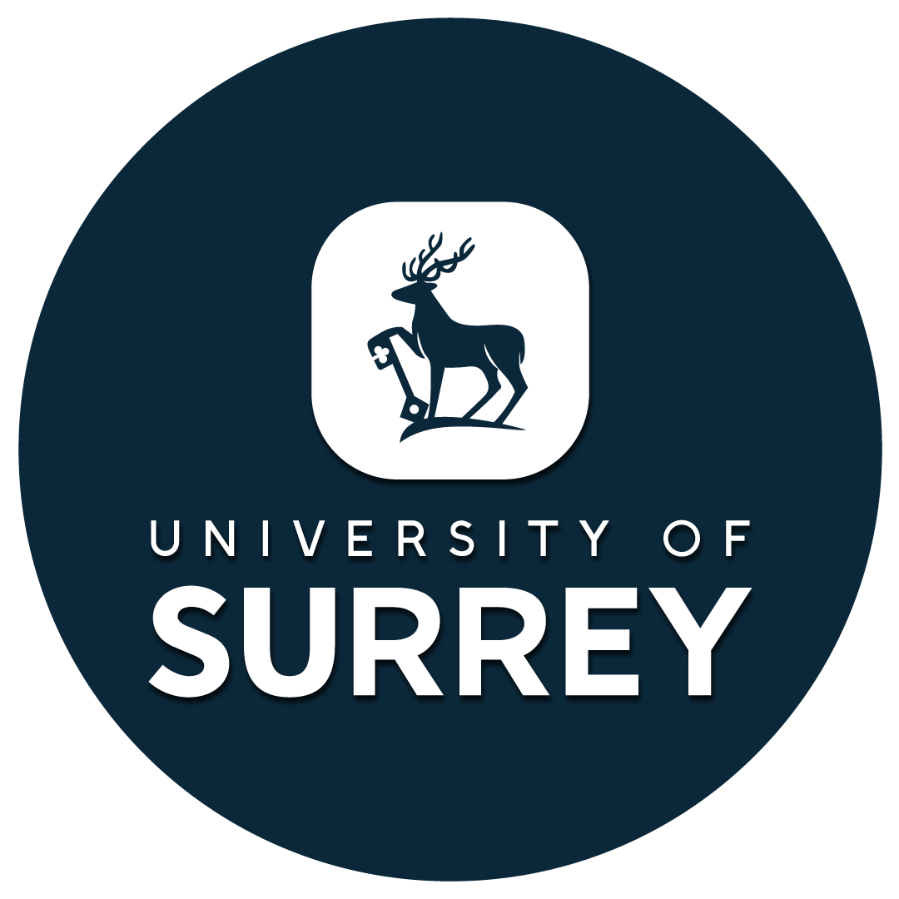
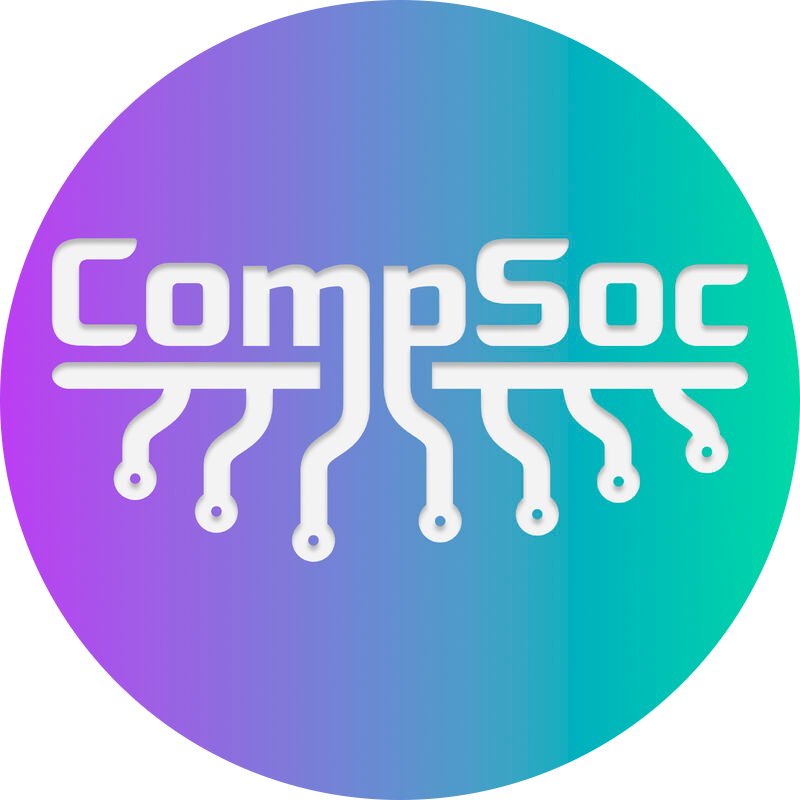
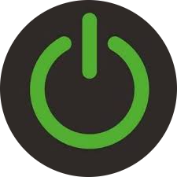
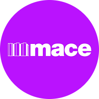
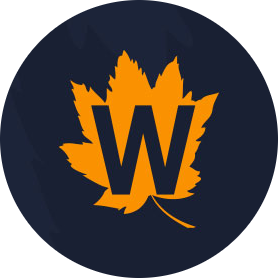
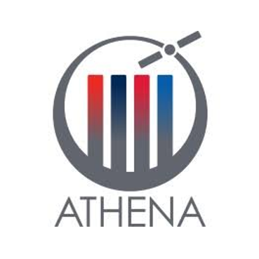

Student Representative - Computer Science Department
 June 2025 - Present- Represent the Computer Science department at open days.
- Communicate with prospective students and families, providing insight into the degree and student experience.
Wellbeing Champion - CompSoc
 October 2025 - Present- Create a supportive and inclusive environment for my peers, raising awareness of available support.
- Organise events to engage members and make students feel welcome.
- Act as a visible and approachable point of contact for members, providing guidance and support while promoting wellbeing within the club.
Location Camp & Virtual Tutor
 June 2025 - August 2025- Taught lessons both virtually and in-person, supporting a wide range of ages and abilities.
- Delivered lessons on Object-Oriented Programming, Python Fundamentals, Tkinter GUI Development and 2D Game Design in Unity (C#) during summer camps.
- Assisted students on a wide range of coding and game design projects, providing guidance and troubleshooting support.
- Wrote progress reports to track student development and achievements.
- Supervised and entertained students during breaks and lunch, ensuring a fun, safe, and supportive summer camp atmosphere.
Work Experience - Construction Management (Major Projects)
 July 2023- Completed a week-long student placement under a Senior Construction Manager on a Major Project (40 Leadenhall Street).
- Introduced to Health & Safety awareness, Programme Tracking, Action List Distribution and coordinating works.
- Assisted with documentation and site inspections.
- Worked directly with the Senior Construction Manager on day-to-day site activities.
Founder & Coordinator - LEGO Mindstorms Robotics Club
 November 2022 - July 2024- Founded and led a bi-weekly LEGO Mindstorms Robotics Club for students aged 11 - 15.
- Designed and delivered engaging sessions on programming, robot design, presentation skills and teamwork.
- Mentored students, improving STEM skills and competition success at the FIRST LEGO League Regionals, MASTERPIECE℠ Season 2023/24.
- Awarded the 'Team Coach Award' at the FIRST LEGO League Regionals, MASTERPIECE℠ Season 2023/24.
Participant - Space Camp
 June 2022- Selected as one of three students from my school to attend a week-long programme hosted by Team Athena UK in partnership with the National Space Agency.
- Joined 120 students from 20 schools across the UK for immersive training in space science and industry practices.
- Engaged with professionals from leading sponsors including Inmarsat, Lockheed Martin, CGI, and Serco.
- Collaborated in a team project presented to fellow participants and representatives from sponsoring companies at the closing event.